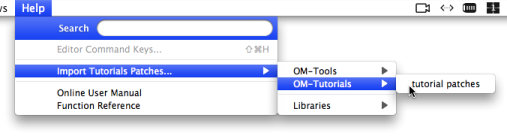

OpenMusic DocumentationHiérarchie de section : OM 6.6 User Manual > The OM Environment > Tutorials
OpenMusic DocumentationHiérarchie de section : OM 6.6 User Manual > The OM Environment > Tutorials
Navigation : page précédente | page suivante
Attention, votre navigateur ne supporte pas le javascript ou celui-ci à été désactivé. Certaines fonctionnalités de ce guide sont restreintes.
Examples Patches and Tutorials
The OM application and libraries generally come with a set of example patches and tutorial allowing to get into different aspects and features of the compositional environment.
To import this material, go to the Help / Import Tutorial Patches menu.

When an item is selected, a corresponding new folder is created in the current workspace (or folder) window, filled with a set of tutorial patches.
Former "Ircam Workspaces"
The tutorial patch correspond to the marerial formerly contained in the "Ircam workspaces" installed with OM :
OMWorkspace :
The material contained in the
om tutorialsfolder is now available via the OM-Tutorials submenu. The material of other folders, such asmathtools,midietc. is available via theOM-Toolssubmenu.
Lib-Workspace :
The items of the Lib-Workspace are available via the
Librariessubmenu.
Références :
Plan :
- OpenMusic Documentation
- OM 6.6 User Manual
- Introduction
- System Configuration and Installation
- Going Through an OM Session
- The OM Environment
- Environment Windows
- Preferences
- Workspace
- Library
- Tutorials
- Resources
- Visual Programming I
- Visual Programming II
- Basic Tools
- Score Objects
- Maquettes
- Sheet
- MIDI
- Audio
- SDIF
- Lisp Programming
- Errors and Problems
- OpenMusic QuickStart
Navigation : page précédente | page suivante
A propos...(c) Ircam - Centre Pompidou